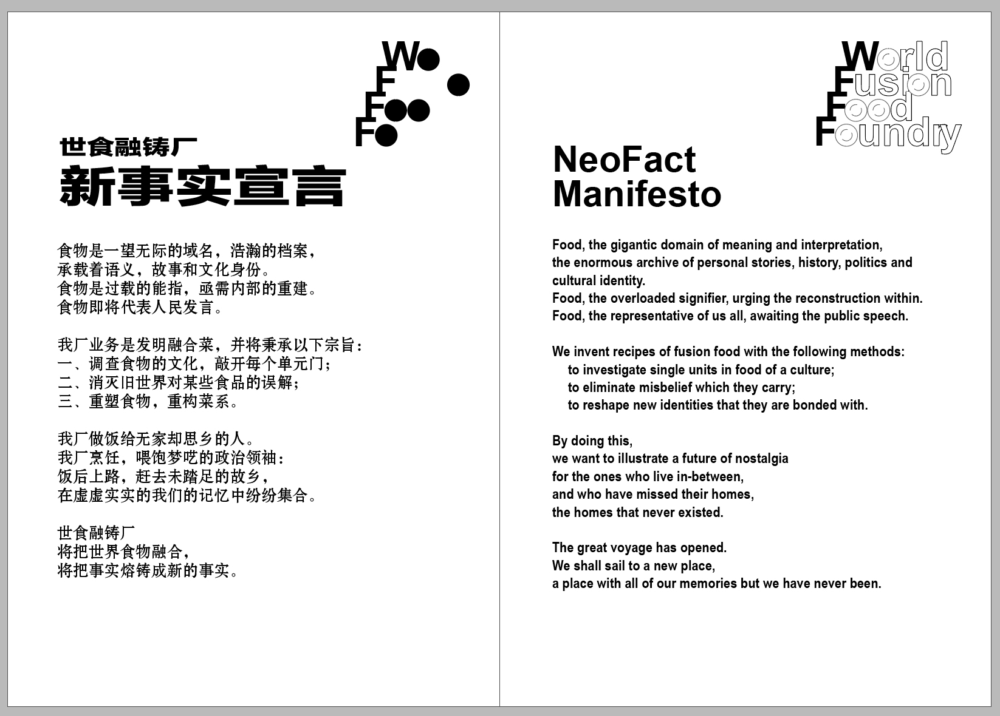
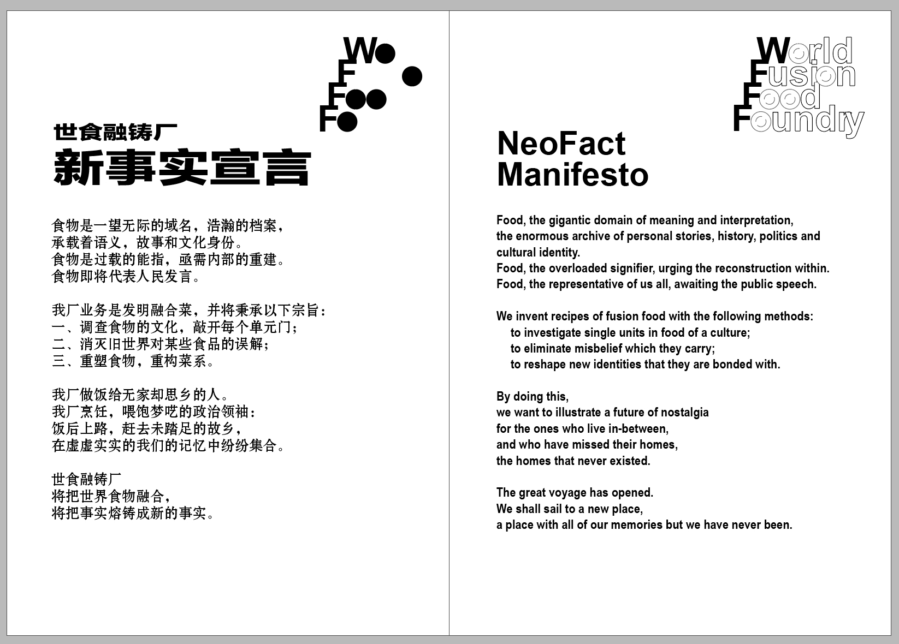

WFFF
2020
World Fusion Food Foundry is an invented playground where the artist experiments how food can be an overloaded signifier, a carrier of politics and cultural identities.
In the series of performances, the artist tries to combine provocative politician’s language with the act of giving cooking shows, thus to examine the possibility of extracting and isolating rhetorics from action.
Growing up in the capital city of China, she has studied the common language of political speeches in schools and the media. There is a mixture of both rejection and fascination to this grandiosity, revolutionist passion and the early communist mania. This work is not merely a satire of such a type of language, but is also about the artist’s attempt to resolve her relationship with this cultural specific rhetorics.
I transformed cooking show into a live cooking buffet to the public, at the event CinemAsia presents : Live in between vol. 2: Trans-dialogue


 
